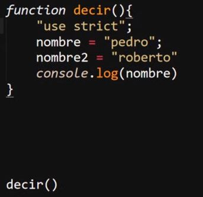

Modo Estricto
Se trata de una implemetación del "ES6" para fomentar el uso de las buenas practicas y la correcta sintaxis de JavaScrip, esto devido a que para el momento de creación de este, gran parte de las paguinas de internet poseina errores en su codigo llegando al punto de que incluso podian depender de estos errores para funcionar correctamete.
Para contrarestar esto se desarrollo el "modo estricto" (use strict) el cual ajusta el comportamiento de JavaScrip para que:
-
Combierte los errores sintaxicos en excepciones: JavaScrip por defecto puede ejecutarse sin problemás aun con ciertos errores leves que el lenguaje esta preparado para solventar.
Como por ejemplo al declarar una variable sin definir el tipo de esta, en cuyo caso por defecto se le asignara el tipo "var", este tipo de errores simples que son solventados por JavaScrip detonarian un error si se tienen el modo estricto activado, ya que este no solventa los errores, en su logar simplemente dispara el error por consola.
Por lo tanto el modo estricto no permite los errores de sintaxis en el codigo
-
Mejora la optimización de los errores y mejora el tiempo carga: Esto devido a que el modo estricto mejora el manejo de errores, lo cual por si mismo ya es suficiente para mejorar el rendimiento de la paguina y su carga
-
Evita la sintaxis usada en verciones anteriores a "ES6": Esto debido a que la sintaxis de esa epoca esta plagada de errores y malas practicas, mientras que en "Es6" se aplicaron modificaciones para mejorar la sintaxis y incorporar buenas precticas
-
No permite que el programador realize una mala sintaxis: Directamete fuerza al programador a realizar las buenas practicas y respetar la sitaxis reglametaria despues de "ES6", cosa que no sucede en el JavaScrip por defecto
El modo estricto en si es una instrucción para el interprete de JavaScrip, en la que se le indica que debe aplicar ciertas reglas a la hora de interpretar el codigo.
El modo estricto se puede aplicar ya sea de forma global en todo el documento o en un bloque en particular del codigo, para aplicarlo de forma global es necesario ingresar las palabras claves "use strict" entre parentesis (" ") como primera instrucción al principo del documneto JavaScript.
Ejemplo
Del mismo modo para definirlo dentro de un bloque de codigo con un alcanse local tambien es necesario definirlo como primiera instrucción de este, por lo tanto para indicar el uso del modo estricto ya sea en todo el documento o en un unico bloque de codigo es necesario definirlo como primera instrucción, de lo contrario el interprete lo considerara un dato más.
Ejemplo

Efectos del Modo Estricto
-
Las variables deben declararse: Por defecto JavaScrip asigna el tipo "var" a las variables a las que no se le defina el tipo, con el modo estricto esto no pasa, en su lugar se dispara en error en caso de que no se definio el tipo de variable.
Ejemplo
Resultado
-
modificar las Propiedades (defineProperty() y writeable): "defineProperty()" se trata de una forma de declarar las propiedades, en el siguiente ejemplo, se define un objeto al que se le aplica "defineProperty()" para añadirle una propiedad de nombre "nombre" y con un valor "pedro".
Ejemplo
Definir la propiedad de esta forma tiene la ventaja de permitir configurar la de una forma mucho más detallada, permitiendo tambien el definir el status de la propiedad "writeable", la cual indica si una propiedad es de tipo solo escritura, para lo cual se le define con un valor "false", de ese modo la propiedad no podra ser modificada ni sobre escrita, y de intenetarlo se disparara un error.
Resultado
Mientras que en el javaScript común esta funcionalidad se comportaria igual pero con la diferencia de que no se disparararia el error, por lo tanto si el programador realiza el error de intentar sobre escribir la propiedad no habra mensaje de error que lo indique.
-
Agregar Propiedades: En el JavaScrip comun cuando se usa la propiedad preventExtensions() la cual impide que se añadan nuevas propiedades a un objeto una vez es usada, no se detona nungun tipo de error, simplemete las nuevas propiedades que se deseen añadir no se ejecutaran, mientras que con el modo estricto se disparara un error en consola notificando al programador si se intenta añadir una nueva propiedad a un objeto luego de usar preventExtensions()
Ejemplo
Resultado
-
No se Puede Añadir Porpiedades a un String: Normalmente en javaScript si se intenta añadir una propiedad a un "string" no pasa nada, simplemente el "string" no es capaz de ejecutar la propiedad, sin embargo con el uso del modo estricto este tipo de errores disparara un error en consola.
Ejemplo
-
No existen las multiples variables en una expresión: en JavaScrip si una función posee dos parametros llamados de la misma forma esta se ejecuta sin problema, simplemte que el parametro que se empleara dentro de la función sera el ultimo a la derecha
Por otra parte con el modo estricto la función nisiquiera se podra definir, siempre que esta posea dos parametros llamados igual se disparara un error en consola.
Ejemplo
-
Delete en objetos o variables: Delete es una palabra clave que permite elminar propiedades de un objeto, ese es su correcto uso, en javaScript normal si se intenta usar "delete" para eliminar algo que no sea una propiedad como un objeto o una variable simplemte esto no ocurre (ya que no se permite) y se continua con la ejecución
Por otro lado con el modo estricto esto desencadena un error en consola que impide la ejeución.
Ejemplo
-
Las Palabras Recervadas no Pueden ser Usadas como Nombres de Variables: En la mayoria de los casos al menos que la palabra recervada sea degran importacia javaScript perdona estos errores y permite el uso de la palabra recervada como nombre de la variable, sin embargo con el modo estricto esto no ocurre, si no que en su lugar se dispara un error
Ejemplo
Nota: no todas las palabras recervadas estan registradas en esta función del modo estricto.
-
Cambia el THIS de los objetos: Recordar que en los constructores de los objetos se utilizan el elemento "this", al usar el modo estricto estos elemtos "fallan" (Esto se aborda en el siguite apatado sobre las funciones)
-
Numeros "octales" con un "o" adelante y no existe with: Los numeros octales so aquellos que se rigen por ocho simblos
Ejemplo
-
Arguments y Eval no pueden ser variables: Ambos elemetos se desenglosan en los siguites temas ya que pertenecen a los apartados de las funciones